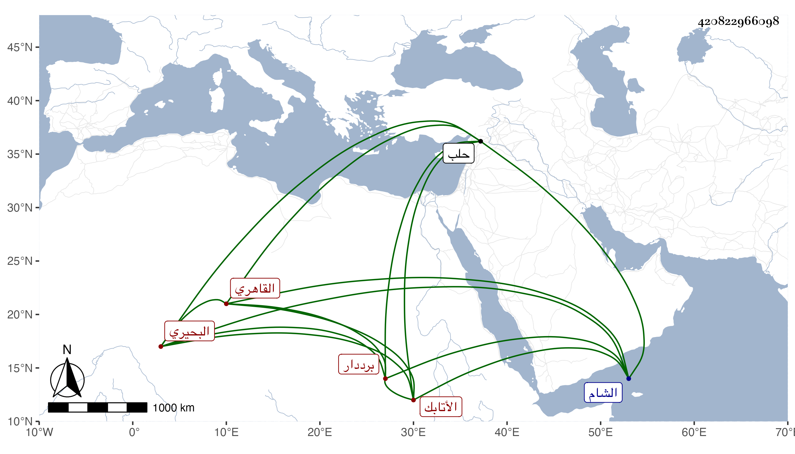

0902Sakhawi.DawLamic.ITO20230111-ara1.EIS1600.420822966098
Biography ID: 420822966098
322
محمد بن إسماعيل بن إبراهيم بن جمعة البحيري الأصل القاهري برددار الأتابك أزبك وشقيق أحمد الماضي ويعرف كل منهما بابن إسماعيل . نشأ دهانا قليلا ثم وقف مع أيبك بباب قانم التاجر الأتابكي ثم بعد موته خدم مع صهره على برددار الأتابكي حين كان حاجبا إلى أن سافرا معا حين عمل نائب الشام وعادا حين استقر أتابكيا فداما حتى مات أولهما وانفرد هذا بالتكلم وارتقى في بابه لما لم ينهض له غيره وصار المعول عليه إلى أن نكبه لكونه قيل عنه أنه أخذ من المشاة كلهم بحلب دينارا دينارا وبلغ ذلك السلطان فأعلم أستاذه فنكبه ووضعه في الحديد وضربه باطنا وظاهرا واستخلص منه فيما قيل زيادة على أربعين ألف دينار وهو لا يصغي له في كونه تقدما معه بل يطالب ويضارب مع الترسيم والتشديد المديم وآخر ما بلغني كونه مرسما عليه بباب حاجب الحجاب تنبك قرأ في رجب سنة ثمان وتسعين وهو كأخيه من العوام وينسب لإطعام وبر وغير ذلك مع كونه حج غير مرة .
